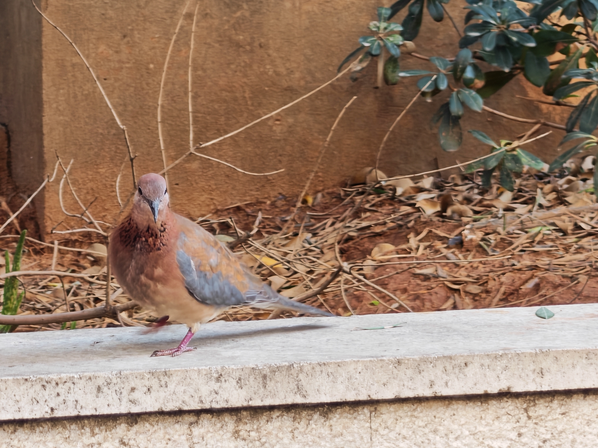
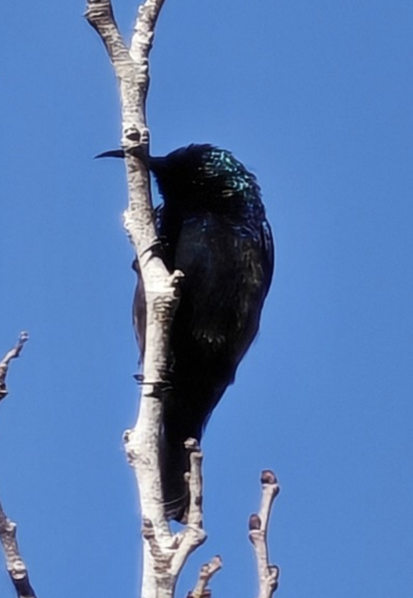
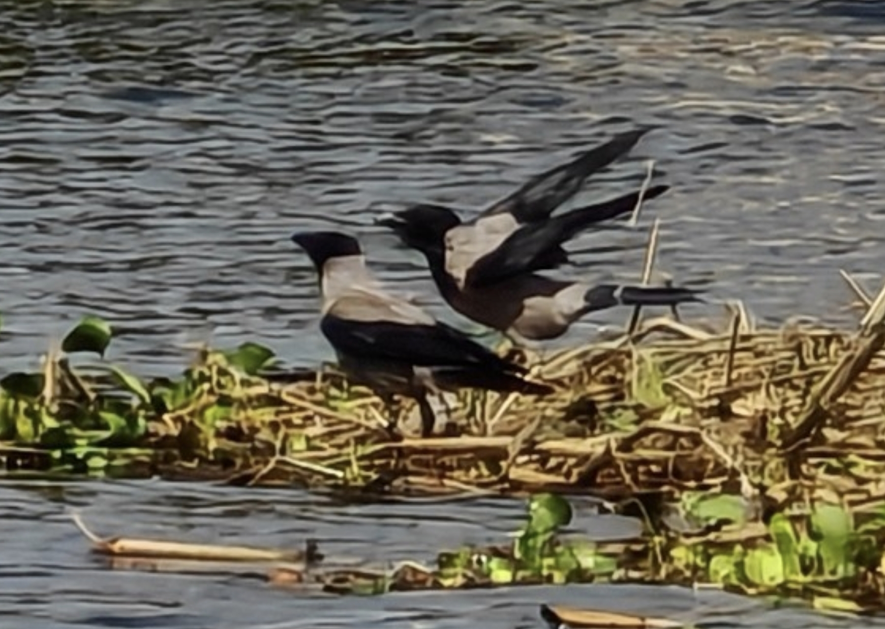
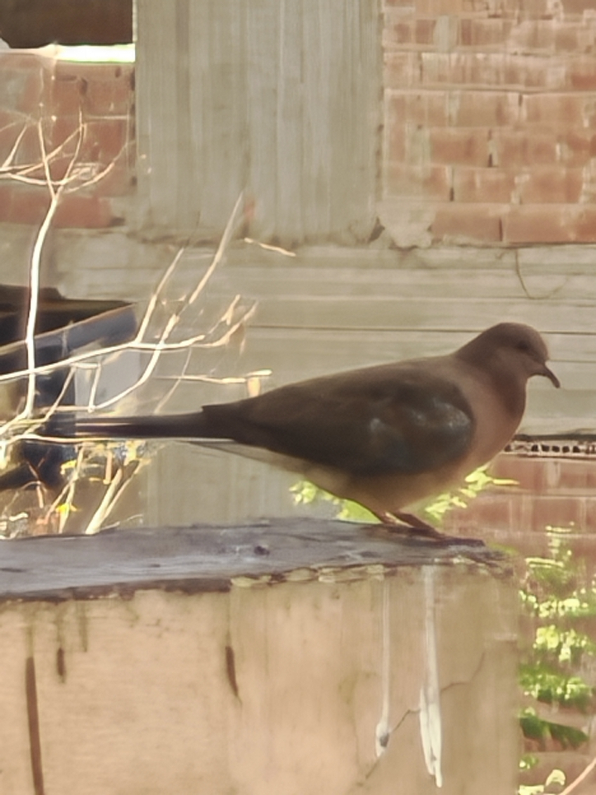
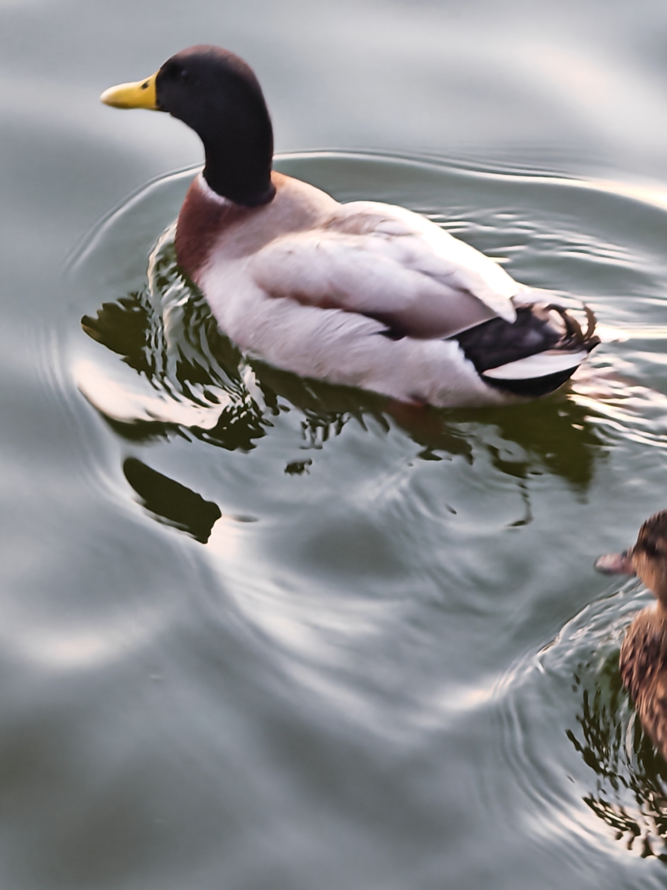
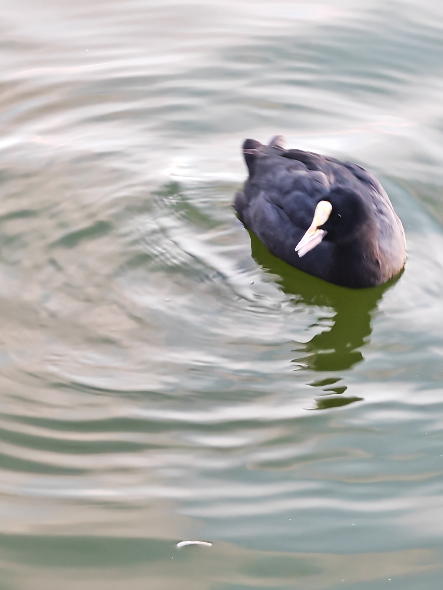
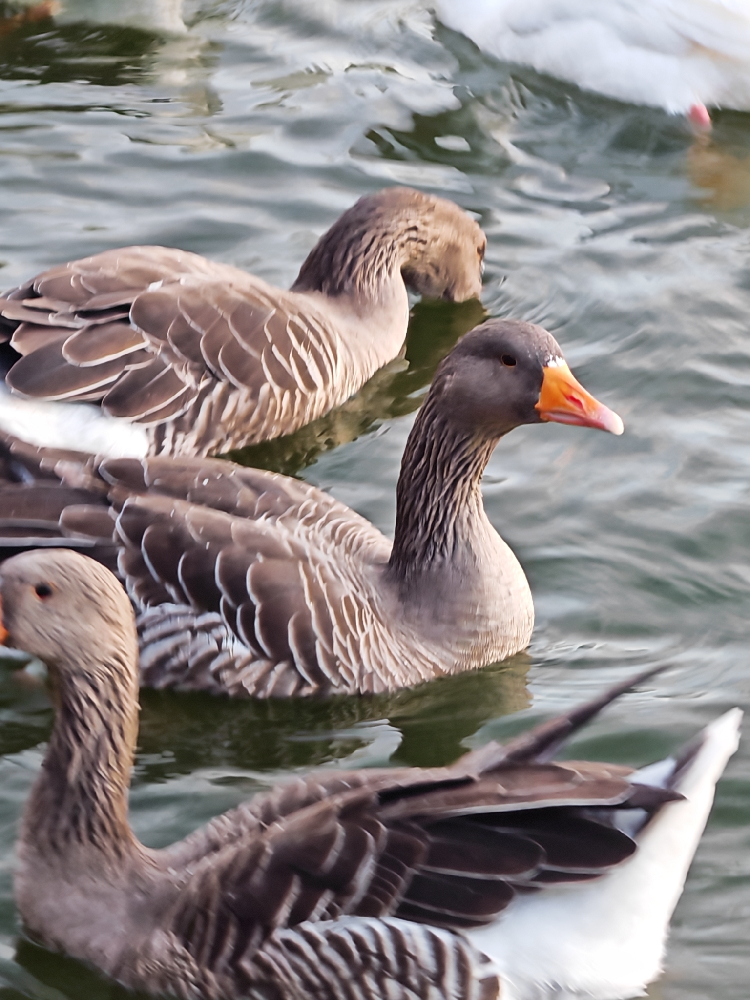

Birds across three countries, through the lens of Nayef Krayem, Director General of Sayd website
2 October 2026
Two mynas on grass near Beirut International Airport road — 2 October 2026. Acridotheres
From Lebanon to Egypt and France, nine photographs capture birds in everyday settings: on grass, branches and water.

A Laughing Dove in Jnah, Lebanon — 15 February 2026. Spilopelia senegalensis

A Palestine Sunbird on a branch in Kherbet Selem, Lebanon — 25 October 2025. Cinnyris osea

Hooded Crows by the Nile in Dokki, Giza — 28 April 2026. Corvus cornix

A Laughing Dove on a wall ledge in Dokki, Giza — 27 April 2026. Spilopelia senegalensis

A male Mallard on the water in Enghien-les-Bains, France — 11 October 2025. Anas platyrhynchos

A Eurasian Coot swimming in Enghien-les-Bains, France — 11 October 2025. Fulica atra

Greylag Geese on the water in Enghien-les-Bains, France — 11 October 2025. Anser anserA Great White Pelican above the Matn expressway, Lebanon — spring 2026. Pelecanus onocrotalus